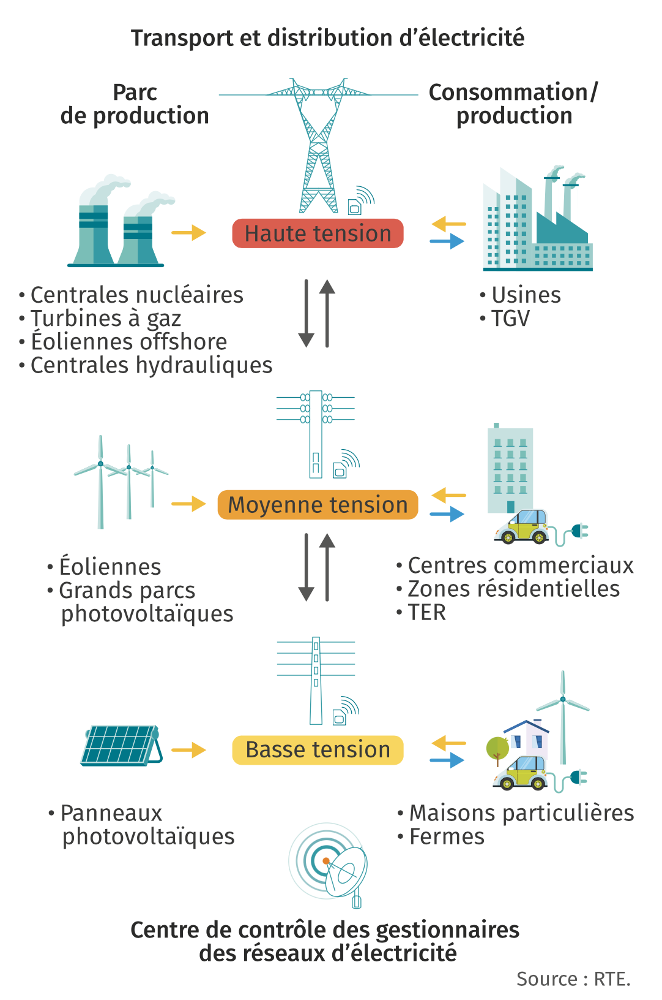
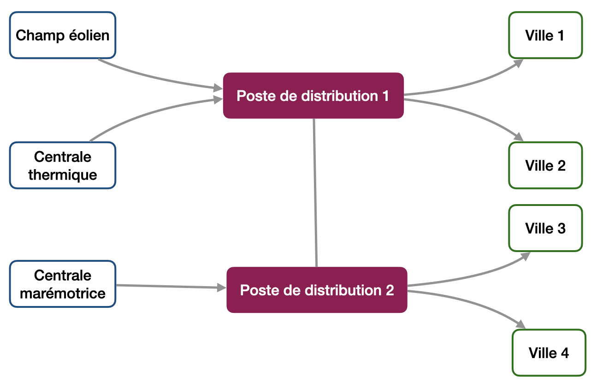
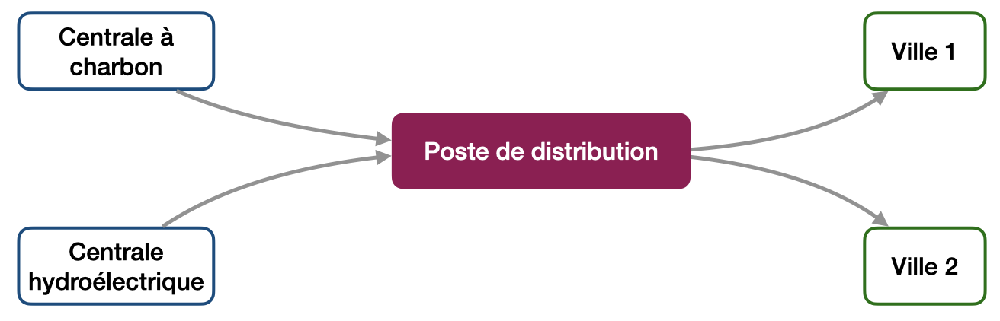
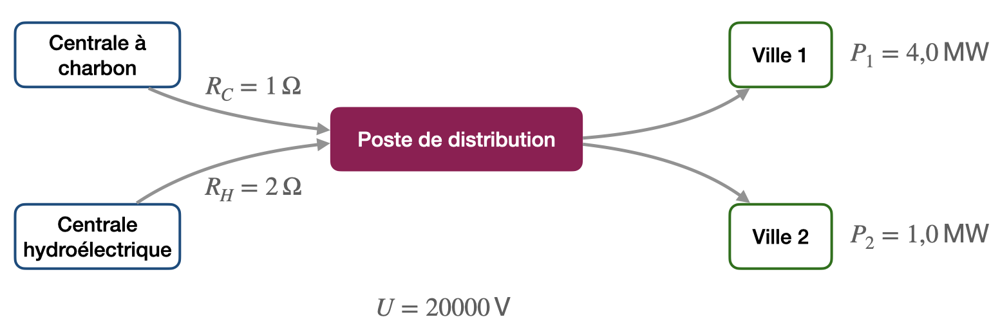

Réseaux électriques et graphes
Modélisation d’un réseau électrique
Un réseau électrique fait apparaître :
- des sources (centrale nucléaire, station photovoltaïque, centrale géothermique, …) ;
- des cibles (usines, villes, villages, particuliers, …) ;
- des équipements intermédiaires, qui assurent les liaison entre les réseaux, ou alors l’élévation ou l’abaissement de la tension électrique (transformateurs).
Si on représente chaque entité évoquée ci-dessus par un point et les câbles qui les relient par des traits, on forme une structure qu’on appelle graphe en mathmétique (ou en informatique).
Un peu d’histoire : Les Ponts de Königsberg
La ville de Königsberg (aujourd’hui Kaliningrad en Russie) est construite autour de deux îles situées sur le Pregel et reliées entre elles par un pont. Six autres ponts relient les rives de la rivière à l’une ou l’autre des deux îles.

Existe-t-il une promenade dans les rues de Königsberg permettant, à partir d’un point de départ au choix, de passer une et une seule fois par chaque pont, et de revenir à son point de départ, étant entendu qu’on ne peut traverser le Pregel qu’en passant sur les ponts ?
Réponse (intuitive)
Non. Si une telle promenade existait, chaque quartier devrait être relié à un nombre pair de ponts : un premier pour arriver dans le quartier, un second pour quitter le quartier.
Existe-t-il une promenade dans les rues de Königsberg permettant, à partir d’un point de départ au choix, de passer une et une seule fois par chaque pont ?
Réponse (intuitive)
Non. Si une telle promenade existait, les quartiers, à l’exception des quartiers de départ et d’arrivée, devraient être reliés à un nombre pair de ponts : un premier pour arriver dans le quartier, un second pour quitter le quartier.
Comment Euler a-t-il résolu le problème en 1735 ?
Il a représenté les quartiers par des nœuds et les ponts par des arêtes et cherché si un parcours passant par toutes les arêtes une et une seule fois existait.

Qu’est-ce qu’un graphe ?
Graphe
-
Un graphe non orienté est constitué d’un ensemble de points, appelés nœuds, et d’un ensemble de couples de nœuds distincts appelés arêtes.
-
Un graphe orienté est constitué d’un ensemble de points, appelés nœuds, et d’un ensemble de couples de nœuds distincts appelés arcs. Les arcs sont alors représentés par des flèches.
-
Un graphe, orienté ou non peut être pondéré par des valeurs numériques affectées à ses arêtes ou à ses arcs.
-
On appelle parcours dans un graphe un chemin qui relie deux nœuds.
Dans le cas d’un graphe pondéré, la valeur numérique associée à une arête (poids) peut être la distance entre ses deux extrémités ou le coût pour aller de l’une à l’autre.
De nombreux problèmes d’optimisation sur les graphes ont été étudiés, l’un des plus connus étant celui du
voyageur de commerce
: « Étant donné une liste de villes, et des distances entre toutes les paires de villes, déterminer un plus court chemin qui visite chaque ville une et une seule fois et qui termine dans la ville de départ. »
Ce problème est encore un domaine actif de recherche et il existe seulement des algorithmes imparfaits qui ne trouvent pas toujours le meilleur chemin.
Exemples de modélisations de situations par des graphes
- Routage de l’information sur internet ;
- Relations entre personnes dans les réseaux sociaux ;
- Réseau autoroutier ;
- Réseau ferré ;
- …
Réponses
a) Graphe non orienté constitué de 4 nœuds et de 5 arêtes.
b) Graphe non orienté constitué de 4 nœuds et de 7 arêtes (graphe du problème des
7 ponts de Königsberg
).
c) Graphe orienté constitué de 4 nœuds et 6 arcs.
d) Graphe orienté et pondéré constitué de 4 nœuds et 5 arcs.
Modélisation d’un réseau électrique
La répartition des courants électriques dans un réseau doit satisfaire plusieurs contraintes
- L’intensité du courant électrique qui quitte une source ne peut pas dépasser sa capacité de production ;
- L’intensité totale du courant électrique qui entre dans chaque nœud doit être égale à l’intensité du courant électrique qui en sort (c’est la loi des nœuds) ;
- L’intensité du courant électrique qui arrive au niveau de chaque cible est fixée par ses besoins en énergie électrique.
Modélisation d’un réseau électrique
Un réseau électrique peut être modélisé par un graphe pondéré et orienté. Les sommets du graphe représentent les sources, les cibles et un certain nombre de nœuds intermédiaires. Les arcs du graphe représentent les lignes électriques, elles sont pondérées par l’intensité du courant électrique dans le câble et orientées par le sens du courant (des sources vers les cibles).
Application :
Une île comporte quatre villes. Pour répondre aux besoins énergétiques de ces quatre villes, un champ éolien, une centrale marémotrice et une centrale thermique ont été construits.
La répartition du courant se fait par l’intermédiaire de deux postes de distribution reliés entre eux. La centrale marémotrice et le champ éolien sont chacun reliés à un poste différent. La centrale thermique est reliée au même poste que le champ éolien. Deux villes sont connectées à un poste et les deux autres villes à l’autre.
Travail : Construire le graphe modélisant le réseau électrique. En particulier, identifier les différents sommets du graphe, les différents arcs du graphe et le sens des arcs.
Réponse
 - Les quatre villes, les deux postes de distribution, le champ éolien, la centrale thermique et la centrale marémotrice constituent les sommets du graphe. - La ville 1 et la ville 2 sont reliées au poste de distribution 1 par un arc orienté vers la ville (le poste distribue l’électricité). - La ville 3 et la ville 4 sont reliées au poste de distribution 2 par un arc orienté vers la ville (le poste distribue l’électricité). - Le champ éolien et la centrale thermique sont reliés au poste de distribution 1 par un arc orienté vers le poste (les centrales distribuent l’électricité vers le poste). - La centrale marémotrice est reliée au poste de distribution 2 par un arc orienté vers le poste (la centrale distribue l’électricité vers le poste). - Les postes de distribution sont reliés par un arc non orienté, afin d’assurer le transport de l'électricité vers les 4 villes à partir des 3 centrales de production de l’électricité.Minimiser les pertes pour la distribution d’énergie
Deux villes de moyenne montagne sont connectées à l’ensemble du réseau, mais l’électricité provient essentiellement de deux sources : une centrale hydroélectrique et une petite centrale à charbon. Avant d’arriver aux villes, l’électricité passe par un poste électrique qui répartit le courant électrique en fonction des besoins.
On cherche ici à déterminer l’intensité du courant dans toutes les branches du réseau avec le minimum de perte d’énergie lors du transport de l’électricité.
- Construire le graphe modélisant le réseau électrique.
Réponse
- La tension au sein du réseau étudié est de $\pu{20 kV}$.
- La longueur des lignes reliant la centrale hydroélectrique au poste électrique est deux fois plus grande que celle reliant la centrale à charbon au poste électrique. La résistance est donc aussi deux fois plus grande. La résistance des autres branches est négligée.
- La ville 1 a besoin d’une puissance électrique moyenne de $\pu{4,0 MW}$.
- La ville 2 a besoin d’une puissance électrique moyenne de $\pu{1,0 MW}$.
- La valeur de la résistance des lignes reliant la centrale à charbon au poste de distribution est arbitrairement prise comme valant $\pu{1 \Omega}$.
- Compléter le graphe avec les informations ci-dessus.
Réponse
- Déterminer la valeur des intensité $I_1$ et $I_2$ des courants qui arrivent dans les villes 1 et 2.
Aide. Utiliser les deux informations que l’on possède pour chacune des villes.
Réponse
$P = UI$, donc $I = \dfrac{P}{U}$.
- $I_1 = \dfrac{\pu{4,0e6 W}}{\pu{2,0e4 V}}=\pu{2,0e2 A}$.
- $I_2 = \dfrac{\pu{1,0e6 W}}{\pu{2,0e4 V}}=\pu{5,0e1 A}$.
- Écrire la loi des nœuds au niveau du poste de distribution.
On note $I_C$ et $I_H$ les intensités des courants électriques qui quittent les centrales à charbon et hydroélectrique.
Réponse
$I_C + I_H = I_1 + I_2 $
- Écrire l’expression de la puissance joule totale dissipée, en fonction de la seule variable $I_C$.
Réponse
- $P_T = P_C + P_H = R_C \, I_C^2 + R_H \, I_H^2$.
- Comme $I_H = I_1 + I_2 - I_C = A - I_C$ avec $A = I_1 + I_2 = \pu{2e2 A} + \pu{5e1 A} = \pu{2,5e2 A}$, $$P_T = R_C \, I_C^2 + R_H \, (A - I_C)^2$$
- Que faut-il faire pour minimiser l’énergie perdue lors du transport de l’électricité ?
Réponse
Le minimumn de l’énergie perdue lors du transport correspond à la minimisation de la fonction $P_T(I_C)$.
- Compléter le code Python à cette adresse afin de tracer la fonction $P_T(I_C)$. En déduire la valeur de $I_C$ qui minimise l’énergie perdue.